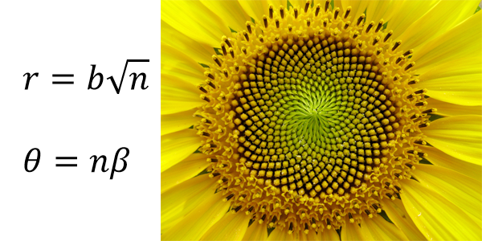
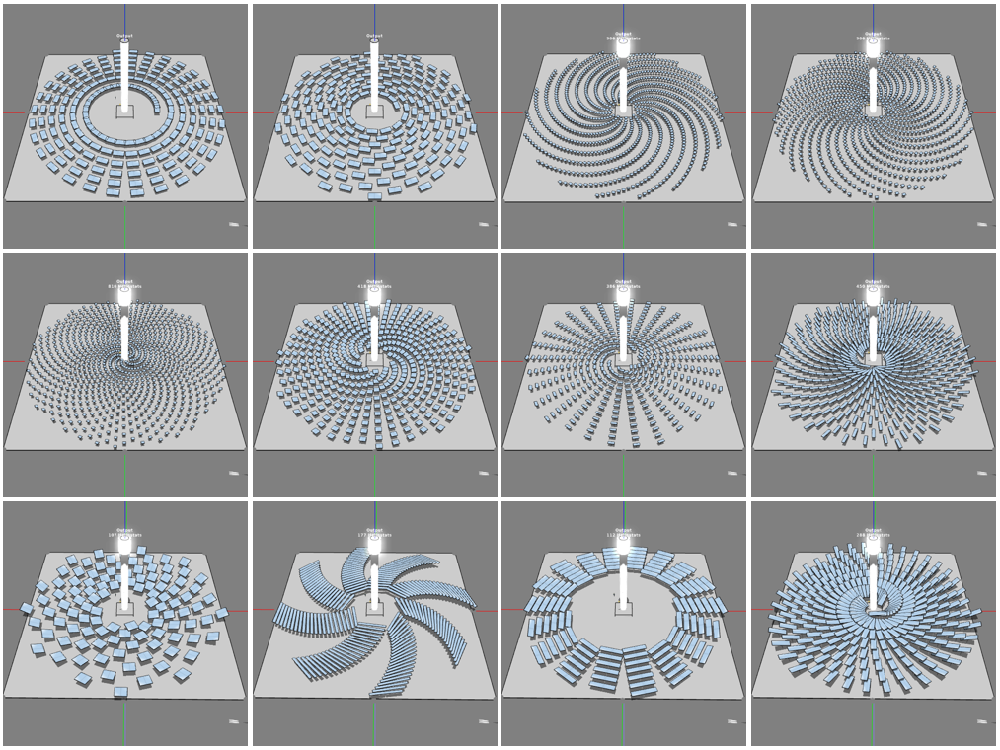
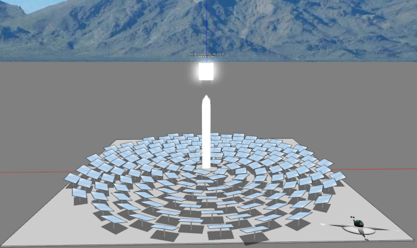
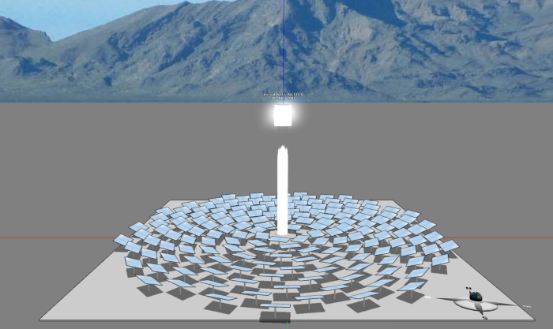

Generative Design of Concentrated Solar Power
By Charles Xie ✉
From a computational point of view, design is about choosing parameters. All the independent parameters available for tweak form the basis of the solution space, with each parameter mapping to a dimension. The ranges in which the parameters are allowed to change sets the volume of the feasible region of the solution space where the designer is supposed to search. This idea leads to parametric design that converts manual procedures into computational procedures for varying the parameters in order to automatically generate a variety of designs and speed up the search. Once such computational procedures are created, designers can execute them on computers to easily produce new solutions by tuning the parameters — without having to repeat the entire manual procedures step by step. This methodology of using computational procedures to shape designs has been promoted as parametricism in modern architecture.
Parametricism lets designers produce many solutions with ease, but the producing computer does not evaluate and select those artifacts. If the selection is driven by artificial intelligence (AI) such as a genetic algorithm, the computer will also be able to spontaneously evolve the designs towards one or more objectives, taking some burden of analysis off the designers. In this case, parametric design becomes generative design. When the objectives are performance-based such as the output of a solar power plant or the energy efficiency of a building, generative design requires the integration of structure formation (CAD) and function evaluation (CAE). When manufacturability becomes an objective, generative design must also incorporate constraints from computer-aided manufacturing (CAM) software. As BBC reported, generative design has been considered by many as one of the most important breakthroughs in engineering technology in recent times.
The animation of a generative design process of a heliostat field within an area of 75m×75m for a hypothetical solar tower in Arizona.
In this article, we use the design of the heliostat field of a concentrated solar power plant (CSP) as an example to illustrate how generative design may be used to search for optimal designs in engineering practice based on the Aladdin software. We recorded a screencast video that used the daily total output of such a power plant on June 22 as the objective function to simplify the calculation and demonstrate the idea. The evaluation and ranking of different solutions in real-world applications must use the annual output or profit as the objective function. For the purpose of demonstration, the simulations that we have run for writing this article were all based on a coarse grid (only four points per heliostat) and a large time step (only once per hour for solar radiation calculation). In real-world applications, a much more fine-grained grid and a much smaller time step should be used to increase the accuracy of the calculation of the objective function.
Heliostat fields can take many forms (the radial stagger layout with different heliostat packing density in multiple zones seems to be the dominant one). A naïve idea is to treat the coordinates of every heliostat as independent parameters and use a genetic algorithm to find the optimal coordinates for all the heliostats. In principle, there is nothing wrong with this approach. In reality, however, the algorithm tends to generate a lot of heliostat layouts that appear to be random distributions (later on, we realized that the problem is as challenging as protein folding if you know what it is — when there are a lot of heliostats, there are just too many local optima that can easily trap a genetic algorithm to the extent that it would probably never find the global optimum within the computational time frame that we can imagine). While a “messy” layout might in fact generate more electricity than a “neat” one, it is highly unlikely that a serious engineer would recommend such a solution and a serious manager would approve it, especially for large projects that cost hundreds of million of dollars to construct. For one thing, a seemingly stochastic distribution would not present the beauty of the Ivanpah Solar Power Facility through the lens of the famed photographers like Jamey Stillings.

Figure 1. A parametric model of the sunflower.
To reduce the extremely high-dimensional problem into something tractable, we chose a biomimetic approach proposed by Noone, Torrilhon, and Mitsos in 2012 based on using Fermat’s spiral as the template to dramatically narrow down the solution space. The Fermat spiral can be expressed as a simple parametric equation, which in its discrete form has only two parameters: a divergence parameter β that specifies the angle the next point should rotate and a radial parameter b that specifies how far the first point should be away from the origin, as shown in Figure 1.
When β = 137.508° (the golden angle), we arrive at Vogel’s model that shows the pattern of florets like the ones we see in sunflowers and daisies (Figure 1). Before using a genetic algorithm, we first explored the design possibilities manually by using the spiral layout manager in Aladdin. Figure 2 shows some of the generated patterns that appear to be sufficiently distinct. These patterns may give us some ideas about the solution space.

Figure 2: Possible heliostat field patterns based on Fermat’s spiral (not necessarily optimal).
We then used the standard genetic algorithm to find a viable solution. In this study, we allowed only four parameters to change: the divergence parameter β, the width and height of the heliostats (which affect the radial parameter b because there should be enough room to prevent the overlap of heliostats in the radial direction), and the radial expansion ratio (the degree to which the radial distance of the next heliostat should be relative to that of the current one in order to evaluate how much the packing density of the heliostats should decrease with respect to the distance from the tower).
Figure 3 shows the result after evaluating 200 different patterns, which seems to have converged to the sunflower pattern. The corresponding divergence parameter β was found to be 139.215°, the size of the heliostats to be 4.63m×3.16m, and the radial expansion ratio to be 0.0003. Note that the difference between β and the golden angle cannot be used alone as the criterion to judge the resemblance of the pattern to the sunflower pattern as the distribution also depends on the size of the heliostat, which affects the parameter b.

Figure 3: The result of a standard genetic algorithm.
We also tried the micro genetic algorithm implemented in Aladdin. Figure 4 shows the best result after evaluating 200 patterns, which looks quite similar to Figure 3 but performs slightly less. The corresponding divergence parameter β was found to be 132.600°, the size of the heliostats to be 4.56m×3.17m, and the radial expansion ratio to be 0.00033.

Figure 4: The result of a micro genetic algorithm.
In conclusion, genetic algorithms can generate results similar to the sunflower pattern for the heliostat field layout of a concentration solar power plant, if we narrow the solution space to the class of Fermat’s spiral. We also realize that an exhaustive search in a full solution space with the coordinates of every heliostat subject to change is probably too computationally expensive to be practical. Therefore, generative design should use dimensionality reduction to simplify a high-dimensional problem into a form solvable within a reasonable amount of time.